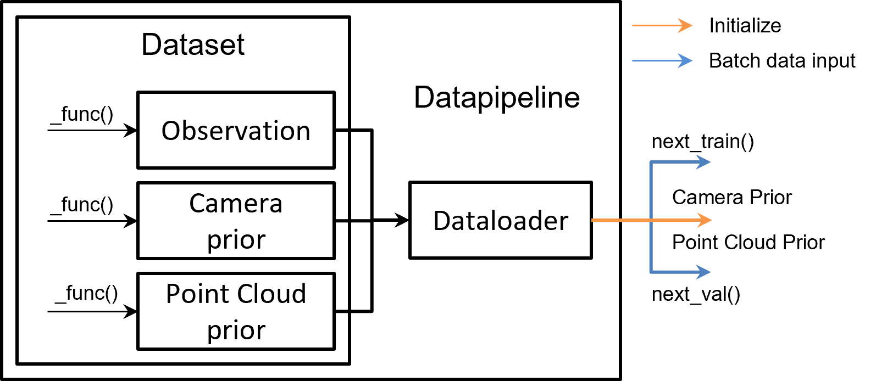

Data Pipeline#
As shown in the diagram below, the data pipeline consists of two main components: Dataset and DataPipeline.
Dataset: Responsible for standardizing user datasets, converting them into Pointrix’s unified data format. This format includes three parts: camera priors, point cloud priors, and observation information. Camera priors primarily contain intrinsic and extrinsic parameters of the cameras. Point cloud priors consist of initial point cloud information obtained from methods like offline SFM. Observation information includes various processed data observed by cameras, such as RGB, depth, normals, etc. Pointrix provides commonly used dataset extraction code. Users needing to load custom data must override corresponding functions:
_load_camera_prior,_load_pointcloud_prior, and_load_metadata.DataPipeline: The standard data flow in Pointrix provides a stable stream of data to the trainer. The main functions of this class are
next_train()andnext_val(), which return batches used for rendering and loss calculation. DataPipeline also initializes cameras and point clouds for the model, as depicted in the diagram below:

Note
To load custom datasets, users must override functions corresponding to observation, camera priors, and point cloud priors. For relevant examples, refer to the tutorial on Adding Supervision to Point Clouds.